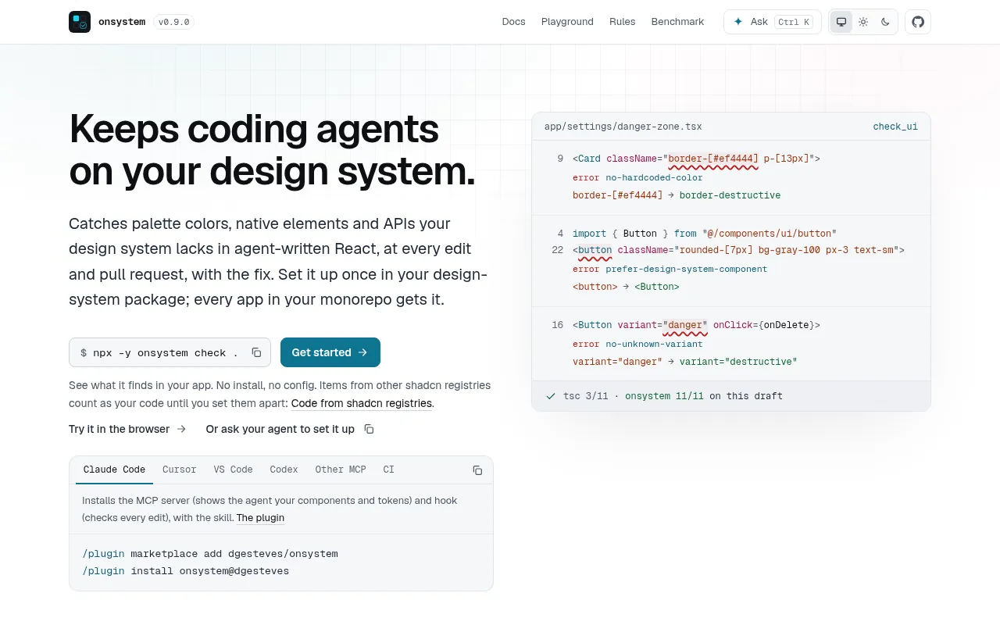
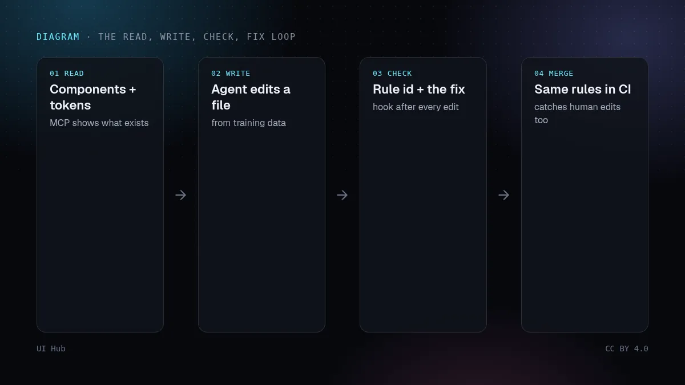
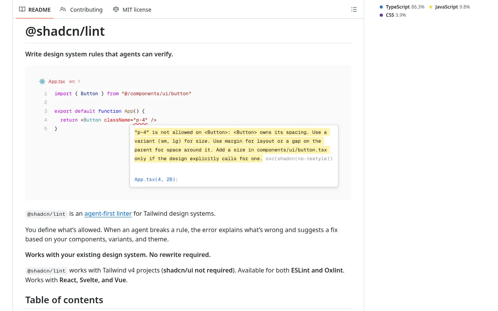

在 shadcn/ui 项目里让编码智能体写一张设置卡片，常常得到能通过类型检查、看起来却不对的东西：用十六进制红色代替 destructive Token，用 p-[13px] 代替间距阶梯，在你真正的 Button 旁边写一个手搓样式的原生 <button>，再加一个你的 Button 根本没有的 variant="danger"。智能体不是不认真，而是凭训练数据写代码，它看不到你的 Storybook。这周，围绕这道缝隙的工具明显成熟了一截。

check_ui），让它看到你的组件和 Token；在 Claude Code 里每次编辑后立即检查该文件的钩子；以及用于拉取请求的命令行、ESLint 插件和 GitHub Action。全程不调用模型。
onsystem 附带一份 10 月 12 日跑的公开基准测试：来自三家厂商的六个模型，在五个开源仓库里各写同样的 20 个界面组件，每种配置 240 次运行。按 onsystem 自己的检查计数，设计系统错误从无辅助时每次 0.85 个，降到技能、MCP 服务和钩子齐上时的 0.00 个，类型检查通过率（93% 对 92%）和每次成本基本不变。换用它控制不了的 @shadcn/lint 打分，每次的问题数从 4.97 降到 2.64。
比标题数字更重要的有两点。第一，标题数字是被测工具自己打的分，作者也明说了，所以该引用的是独立那组：问题大约少了一半，而不是全部消失。第二，按组件拆开的结果才是真正的教训。只给书面技能（也就是写在提示里的一套说明），错误降到每次 0.42；只用 MCP 服务降到 0.01，只用钩子降到 0.05。把规则告诉智能体有用；给它可以查询的东西、会反驳它的东西，有用得多。
两年来，解决 AI 界面不合品牌的答案一直是更好的上下文：Token 文件、AGENTS.md、审美技能、规范文档。这些仍然重要，因为它们告诉智能体什么是好的。但上下文只是请求，Lint 才是契约。这个月浮现的模式是一个「读、写、查、改」的循环：智能体读取你的组件和 Token，写代码，拿到附带修法的精确报错，在你审阅之前就自己改好。设计师应该关心这件事，因为循环里的规则本身就是设计决策：哪些属性可以覆盖，哪些间距值合法，哪些元素必须有标签，总得有人把它们写下来，而这个人应该是系统的负责人。
一点提醒：静态检查只看得见它读得懂的东西。onsystem 文档写明，运行时拼出来的类名（如 bg-${color}-500）或从别的文件传进来的值不会被追踪；@shadcn/lint 的 require-static-classes 规则正是为了标出这类情况。Lint 也管不了层级、节奏和审美，所以它是减少审阅工作，而不是取代审阅。
npx -y onsystem check .，或按 @shadcn/lint 的快速上手），按规则统计问题数，就知道智能体和人已经在哪里跑偏。# 1. 先看现在哪里跑偏（React，无需安装）
npx -y onsystem check .
# 2. 或让智能体配置 shadcn 的 Lint 工具
"Read https://github.com/shadcn-ui/lint/blob/main/SETUP.md
and set up @shadcn/lint in this project."
# 3. 一条策略：Button 自己管尺寸和形状
"shadcn/no-restyle": ["error", { allow: ["layout"] }]
# 4. 每个拉取请求跑同样的规则
- uses: dgesteves/onsystem@v0
Lint 只能执行已经存在的选择。如果你还在定义这些选择，可以先看给智能体的设计 Token和组件组合，再用Claude 和 Cursor 的设计技能搭好说明层。这篇补上缺失的第三步：智能体知道规则之后，检查它有没有守住。